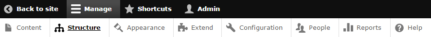
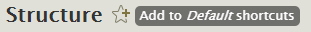
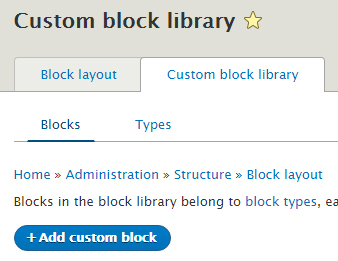
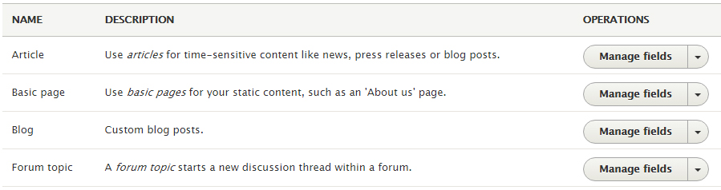
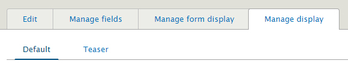

1. Drupal 8.x Quick Start
Introduction
If you are new to Drupal, the amount of information you can get from Drupal.org can be overwhelming. This is a 10 minutes beginner guide. It explain the very basic and give you a quick start on Drupal 8.x. It is also useful if you know Drupal 7 but not Drupal 8. If you are familiar with Drupal 8, you can skip to Omni Basic Setup user guide.
Table of Content
Installation
1. Drupal core
You can get the latest Drupal core files here. Drupal installation process is very similar to other CMS (Content Management System) like Wordpress and Joomla.
Requirements:
- Host ready
- Database created
- Admin username & password for the database
- Drupal core file uploaded & uncompressed to the desire directory
Key in your site base URL into browser, follow the steps process and you will have Drupal 8 installed. For more detailed documents on Drupal installation, you can check out here.
2. Drupal modules & themes
Drupal module serve the same purpose as Wordpress plug-in or Joomla extensions. Basically it extend the core functions so you can have features like showcase, tabbed blocks etc.
Before install Drupal modules & themes, you need to complete the Drupal core installation. Drupal 8.x directories structure as below:
- core
- modules
- profiles
- sites
- themes
- vendor
Drupal 8.x Basic
1. What is what?

- Content - List all the nodes ( node is a Drupal term for post or article ) you have created.
- Structure - Site Structure. Including important units of Blocks, Content types, Menus, Taxonomy & Views.
- Appearance - Themes & theme settings.
- Extend ( Modules ) - Core function extension union.
- Configuration - Site Configuration. Including important units of Text formats, Image styles, Site information, Backup and Migrate, Cron, Performance etc.
- People - Users & permissions.
- Report - Site log, status, updates info.
- Shortcuts - Stored all direct links that you regular used. Add content & All content links are there as default. To add a new Shortcut:

2. Find your way
- Create a new post: Click on Add content. You will have options of Article & Basic page. Drupal 8.x no longer has Blog content type but Omni theme create Blog content type for you. For a regular post select Article content type.
- Create a new menu item: Click on Structure then Menus. Main navigation is primary menu. Click on Edit menu for existing menu items. Click on Add link to add a new menu items. If a menu item has submenu items, that menu item need to be edited and enabled the Show as expanded option. Also for Drupal 8.x, user need to configure Main navigation block for menu level.
- Create a new block: Click on Structure then Block layout > Custom block library. Click on Add custom block link to add a new block. Then you need to go back to Block layout and place it into a region.
3. Have to know - Block
You have to know how block works because from content aspect, everything build by blocks. Change blocks setting can change the page layout.
By click on Structure then Block layout, you should see all the block regions available to you. Some block regions is being reserved. For example:
- Highlighted - For system message only
- Content region - For main page content block only
You can drag & drop or edit the block to publish it to a particular region. Some region can handle more than one blocks, for example Sidebar secondary and Sidebar tertiary. Some region can only have one block, for example closure region.
By click on configure link, you can also tell a block when/who to appear. At visibility settings section, you have options of Show for the listed pages or Hide for the listed pages. This is important because it can help you change your page layout. For example, if you set all your left sidebar blocks with Hide for the listed pages option on a particular page then on that page it will only show right sidebar's blocks. This way you will have a different layout.
New to Drupal 8.x
Now every block you create, you create a block content. When you place it into a block region, you place an instance of that block content NOT block content itself! It means unlike Drupal 7.x, for Drupal 8.x you can reuse your block content at multiple regions by placing multiple instance of that block.
Drupal 8.x also has new Block type. Now we can separate Block type from Content type. For example, Omni 7.x has content type of Mega Menu and Showcase and when you need to create a new Showcase you need to create a new Showcase node. For Omni 8.x, Mega Menu and Showcase are no longer content type. They are block types now. When you need to create a new Showcase, you create a new Showcase block.
4. Have to know - Content types
You have to know about content type because it help you understand node appearance. By click on Structure > Content types, you should see a list of your content types. Blog content type no longer exist in Drupal 8.x, Omni included Blog content type as custom type. User need to enable Forum module for Forum topic content type.

Manage fields help you create new field and manage fields order when node being created. Manage form display is new to Drupal 8.x. It helps user set the edit form when creating node.

Manage display help you control what end user will be seeing. Change order of the fields will change display order to the user. You can also manage your Image field here. For example set difference size of image to default or teaser viewing.
5. Have to know - Image styles
There are three default image styles(size), thumbnail, medium & large. It is being used mostly by content type for teaser and full article display. Find it at Configuration > Media.
6. Have to know - Views
You have to know about Views module because if Drupal is a superhero then Views is his superpower. He hide it under the Structure. That is all you need to know for now. We will explain it in more detail in Omni Feature Setup.
7. Have to know - Site Information
This is where you set your site name, front page number of posts & default path etc. Find it at Configuration > System.
8. Have to know - Performance
Performance is where you set/clear your site Cache. There are also optimization options for your CSS & JavaScript files. Find it at Configuration.
Further Reading
If you want to know more about Drupal, there are plenty documents & tutorials available online. Here is a good starting point.
Copyright
The content of this document is copyrighted by ESORS.com. © 2008-2016 All rights reserved. No portion of the content may be directly or indirectly copied, published, reproduced, modified, performed, displayed, sold, transmitted, broadcast, rewritten for broadcast or publication or redistributed in any medium.